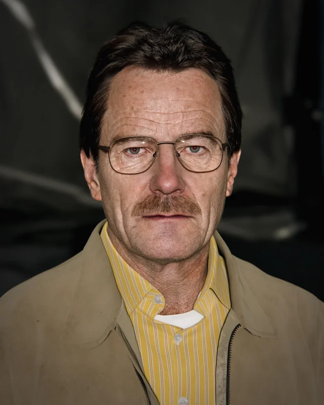
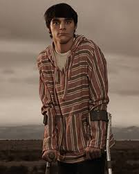
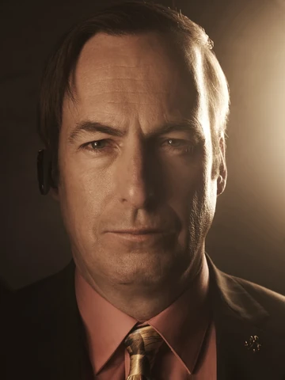

La serie Breaking Bad producida y escrita por Vince Gilligan Producida por Sony Pictures pertenece al genero del Drama, Crimen, idioma del Thriller inglés salio el 20 de enero de 2008 – 29 de septiembre de 2013 Episodios: 62 (5 temporadas) su ambientación es en Albuquerque, Nuevo México, Estados Unidos
| Personaje | Relacion con walter | Alias | Profesion | Rasgo distintivo | Imagen |
| Walter White | Protagonista, él mismo | Heisenberg | Profesor de química / Fabricante de metanfetamina | Transformación moral hacia el crimen |  |
| Skyler White | Esposa | Ninguno | Contadora / Escritora independiente | Personalidad fuerte y protectora | |
| Walter White Jr | Hijo mayor | Flynn | Estudiante | Vive con parálisis cerebral, espíritu resiliente |  |
| Hank Schrader | Cuñado, esposo de Marie | Ninguno | Agente especial de la DEA | Carisma, compromiso con la justicia | |
| Marie Schrader | Cuñada, hermana de Skyler | Ninguno | Técnico en radiología | Lealtad familiar y amor por el color púrpura | |
| Jesse Pinkman | Socio en la fabricación de drogas | Cap’n Cook | Fabricante de metanfetamina | Vulnerabilidad emocional y búsqueda de redención | |
| Saul Goodman | Abogado criminalista | Jimmy McGill / Gene Takavic | Abogado | Ingenio legal y ética cuestionable |  |
Breaking Bad narra la transformación e Walter White, un profesor de química de secundaria subestimado y frustrado, en "Heisenberg," un despiadado capo de la metanfetamina. Con un diagnóstico de cáncer terminal y la presión económica de asegurar el futuro de la familia, Walter decide ingresar al mundo de las drogas con la ayuda de su antiguo estudiante, Jesse Pinkman. A medida que la calidad excepcional de su "cristal azul" se gana la atención, la serie explora temas como la ambición, la moralidad y las consecuencias del poder.